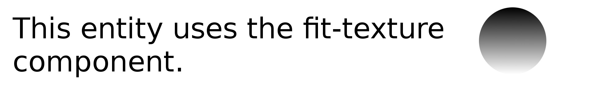
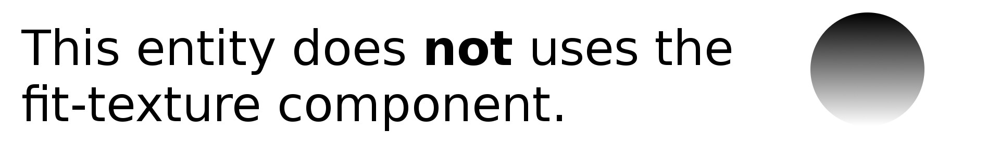

<html>
  <head>
    <title>A-Frame Fit Texture Component - Basic</title>
    <script src="../build.js"></script>
  </head>
  <body>
    <a-scene>
      <a-assets>
        <!--  -->
        <!--  -->
      </a-assets>
    <a-sky color="rgb(217, 221, 233)"></a-sky>
    <a-image position="0 2.25 3" src="#wide1" fit-texture></a-image>
    <a-image position="0 1.3 3" src="#wide2"></a-image>
    </a-scene>
  </body>
</html>
